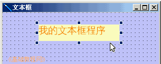
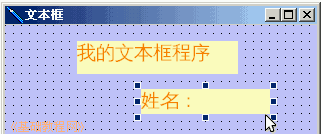
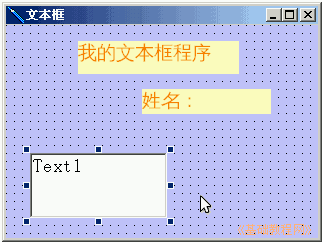
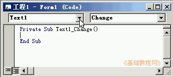
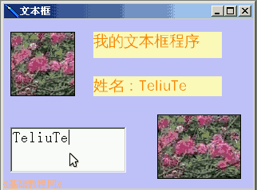

VB程序设计基础
作者：TeliuTe 来源：基础教程网
文本框控件可以输入文本，在文本框里点击鼠标会出现一条闪烁的竖线，下面我们来看一个练习；
1、启动VB
1）双击桌面上的图标，或者点开始菜单，运行VB；
2）在出来的新建窗口中，点“打开”按钮，新建一个标准EXE工程，然后进入主窗口，以 Text 为文件名保存文件到自己的文件夹；
3）在属性窗口中设置背景色淡紫色，把标题改为“文本框”，设定Icon图标选项；
2、文本框控件
1）在左边的工具箱中，点击选中标签控件A，在窗体中绘制一个长方形，在标题Caption 属性中输入“我的文本框程序”；

2）在下面再绘制一个标签，标题输入“姓名”，修改好其他属性；

3）再到工具箱中选择旁边的文本框控件，图标是两个字母 ab|
在窗体左下角绘制一个文本框，里面默认是Text1，修改Font 字体属性，Text 属性先不改；

3）保存一下，运行程序，可以看到文本框里有一条竖线光标闪烁,试着在里面输入文字；
3、输入代码
1）在右边的工程窗口点击进入代码窗口，点击左边对象列表选择 Text1，右边自动选择了 Change；

2）在中间一行按两下空格，然后输入下面的代码：
label2.caption = text1.text注意，前后都有个点，输入caption 时会有自动提示，按空格即可，光标到另一行时，自动转换大小写；
3）这句的意思是，当文本框的内容变化时，第二个标签的内容跟文本框相等，
保存一下，运行程序看一下效果；

文本框范例(在弹出的对话框中点“运行、运行”)
本节学习了文本框控件的使用方法，如果你成功地完成了练习，请继续学习下一课内容；
本教程由86团学校TeliuTe制作|著作权所有
基础教程网：http://teliute.org/
美丽的校园……
转载和引用本站内容，请保留作者和本站链接。